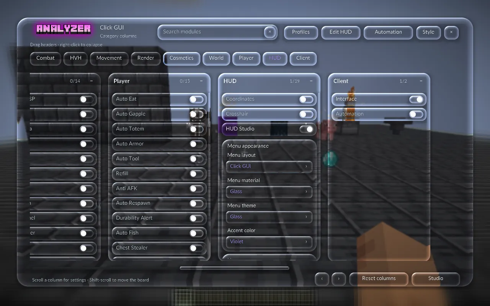
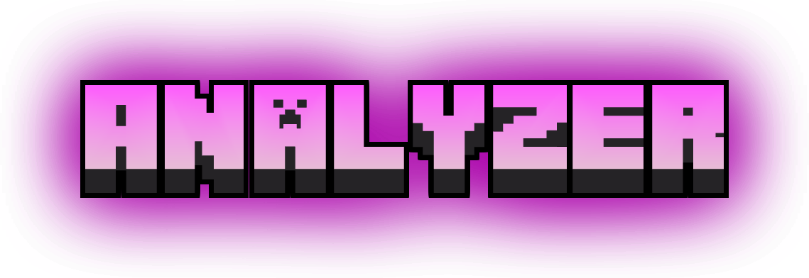
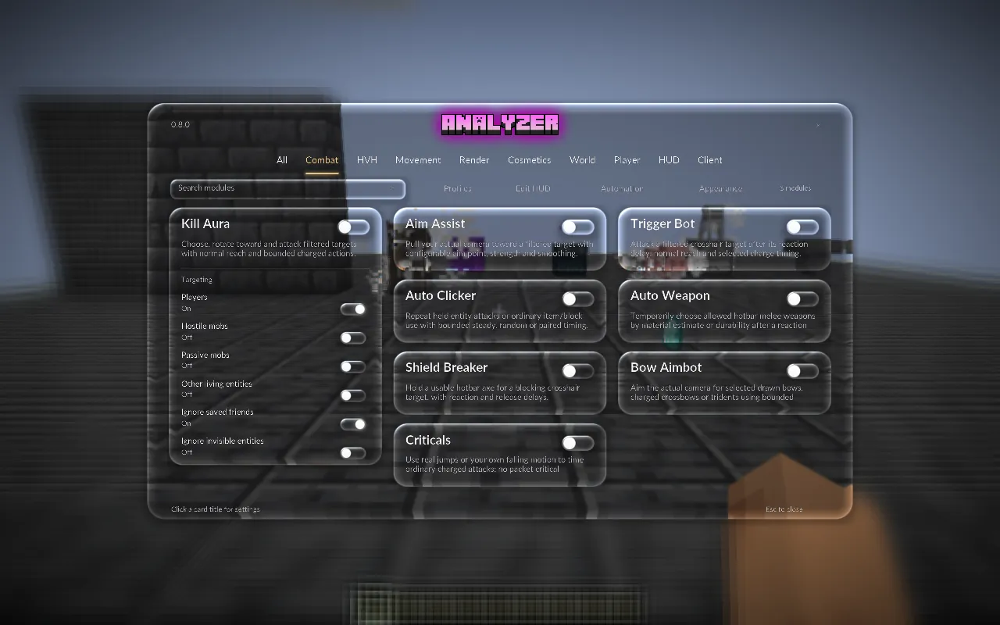
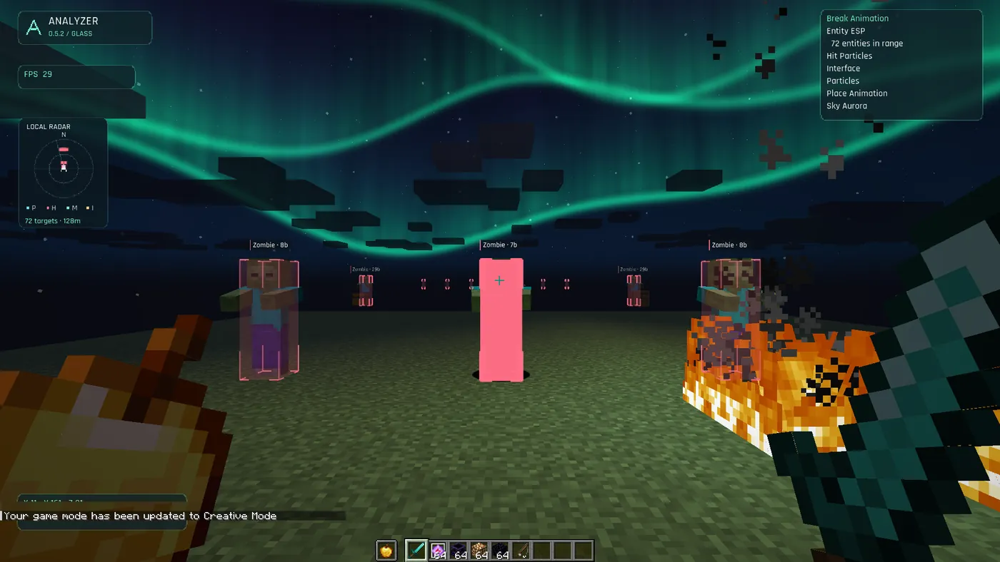
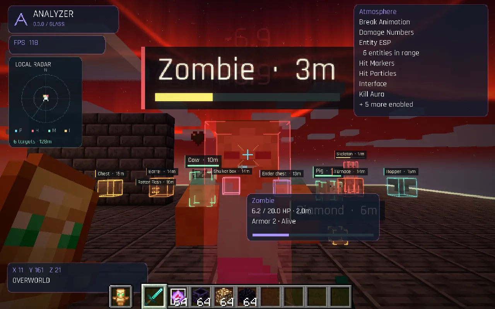
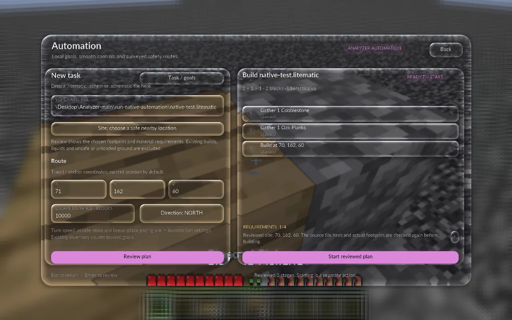
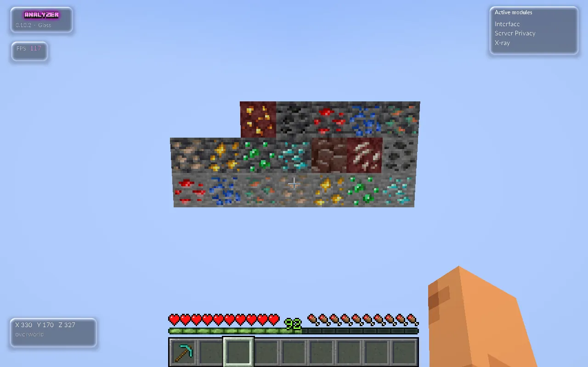
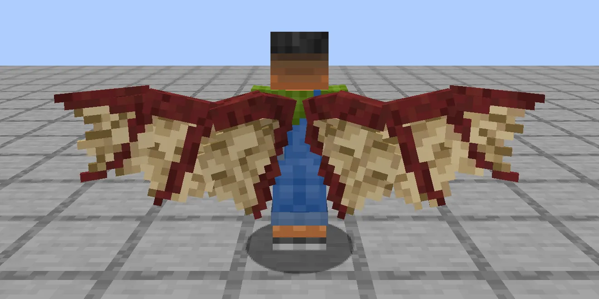
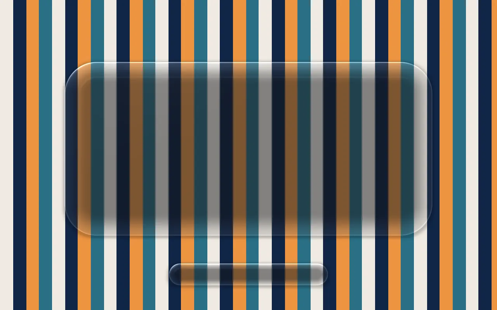
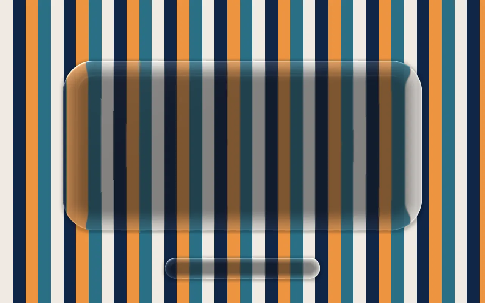

HUD · 19 modules
Menus and HUD
Studio and Click GUI layouts, a custom Home screen and HUD widgets you drag into place. Glass, Classic, Minimal and Neon themes pair with Rose, Mint, Violet or Gold accents.
Menu guide →
v0.15.0 · Minecraft Java 1.21.4 · Fabric

The free, open-source client for anarchy and Donut SMP.
One liquid-glass menu holds every module: stash finders and ESP, crystal and anchor combat, native mining and building automation, server privacy and wearable wings. All of it is on GitHub under the MIT license.
Press Right Shift in game to open the menu.

What's inside
Studio lays modules out as cards with inline settings. Click GUI gives you draggable category columns. Search finds any module by name, and each area below links to its full docs.
HUD · 19 modules
Studio and Click GUI layouts, a custom Home screen and HUD widgets you drag into place. Glass, Classic, Minimal and Neon themes pair with Rose, Mint, Violet or Gold accents.
Menu guide →
Render · 38 modules
Entity and storage boxes, tracers locked to your crosshair, Advanced Stash Finder, Amethyst Finder and a local history of everything you've found.
Finders →
Combat 11 · HVH 7 · Movement 15
Kill Aura with target filters and opt-in silent rotations, Crystal and Anchor Aura, Auto Totem and Hover Totem, plus Speed, Step, Glide and Elytra Boost.
Combat docs →
Native · no Baritone
Type a goal like get me 600 sand
or pick a schematic. Analyzer plans the mining, crafting and route with its own pathfinder, shows you the plan, and waits for you to press Start.

Chams · X-ray · Skybox
Five chams materials on real posed models: Flat, Metallic, Glass, Glow and Wireframe. Three X-ray styles. Procedural skies or your own panorama and cubemap images.
X-ray docs →
Client
Server Privacy is on by default with eight protections, including:
Cosmetics · 35 modules
Angel, Dragon, Bat and Parrot wings on an articulated rig, plus capes, pets, trails and hit effects. They render on your client only.
Wings →


Refraction on OffGlass theme
The Glass theme is an original GLSL shader. It captures the frame behind each menu and bends it through a curved edge, then adds frost, a little color separation and moving glints. This page runs the same idea in WebGL.
Pick an accent. This page switches with it, like the client does.
Anarchy & Donut SMP
Bases stay hidden, fights end fast and servers read what your client sends. These are the modules you'll reach for first, described the way the module catalogue describes them.
Render · World
HVH · Combat · Player
Movement · Player
Client
Both modules work on your side of the connection.
Finders read the chunks your client has already received. Stash results are candidates to check, and Region Map is Analyzer's own grid, not Donut SMP's region numbers. Server Privacy cuts specific leaks; it does not hide your account, your IP or how you play.
Screens
Unedited captures from Minecraft 1.21.4. Select one to see it full size.
Install
Pick how you launch the game. You'll use your own Minecraft account; releases never include accounts, worlds or settings.
Analyzer-0.15.0-Prism-1.21.4.zip from the latest release.The ZIP already contains Fabric API, so there's nothing else to download.
analyzer-0.15.0.jar and the matching Fabric API jar in its mods folder.The -sources.jar is for reading code. Install the plain runtime jar.
git clone https://github.com/XonistReal/Analyzer-Public.git
cd Analyzer-Public
./gradlew build moduleCatalogNeeds a Java 21 JDK. In Windows PowerShell run .\gradlew.bat build moduleCatalog instead. The mod lands in build/libs/analyzer-0.15.0.jar.
Open source
Analyzer is MIT licensed. Read every line, build it yourself, or send a pull request. CI builds every change with Java 21 and checks that the module catalogue still matches the code.
git clone https://github.com/XonistReal/Analyzer-Public.git